★
★ 問題
26問
Q.213(120A-40)★📷 画像正答率 91%
48歳男性、悪寒・発熱（夕方）・軟便、RUQ痛。最も考えられる診断はどれか。
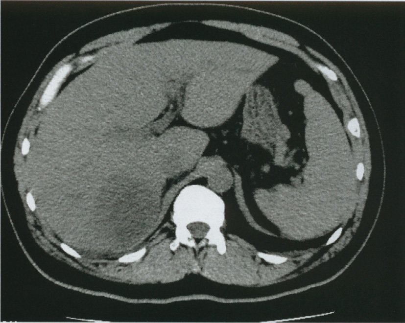
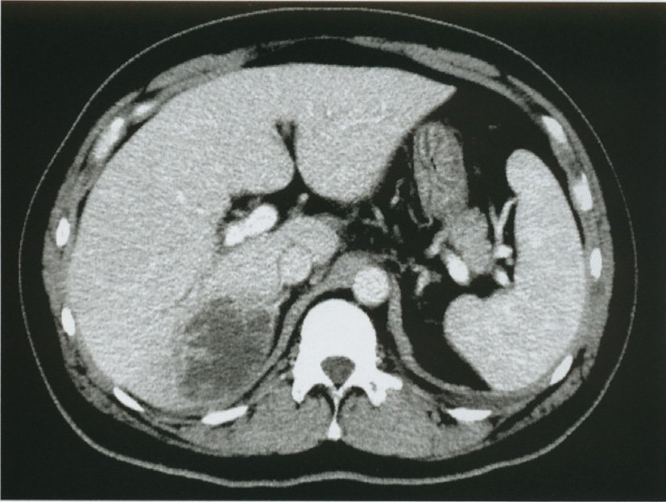
ａ 眼底検査
ｂ 血液培養
ｃ 便の直接鏡検
ｄ 尿中レジオネラ抗原検査
ｅ 肝病変部の超音波ガイド下穿刺吸引検査
A
B メック予備校用
✅
d アメーバ性肝膿瘍
海外渡航（熱帯）歴＋発熱＋RUQ痛→アメーバ性肝膿瘍を疑う
📝 メモ
📋 アメーバ性肝膿瘍 vs 細菌性肝膿瘍
| アメーバ性 | 細菌性 | |
|---|---|---|
| 原因 | Entamoeba histolytica | E.coli・Klebsiella・Streptococcus |
| 疫学 | 海外（熱帯）渡航歴・男性に多い | 胆道疾患・腸管由来 |
| 膿の性状 | チョコレート色・無臭 | 悪臭・黄褐色 |
| 治療 | メトロニダゾール（内科的） | ドレナージ＋抗菌薬 |
| 切開排膿 | 通常不要（内科的治療で治癒） | 必要（ドレナージ） |
🎯 国試ポイント
アメーバ性肝膿瘍：海外渡航歴＋チョコレート色膿＋メトロニダゾール治療。細菌性肝膿瘍：胆道起源が多い→ドレナージ（PTAD・外科）＋抗菌薬。Q.214(119C-35)★画像3択3択正答率 41%
肝内胆管癌のリスクファクターはどれか。3つ選べ。
ａ 飲 酒
ｂ 肝内結石
ｃ 経口避妊薬
ｄ 塩素系有機溶剤
ｅ 原発性硬化性胆管炎
✅
b,d,e （原発性硬化性胆管炎・肝吸虫・肝内結石症）
肝内胆管癌のリスク：PSC・肝吸虫感染・肝内結石症
📝 メモ
📋 肝内胆管癌のリスクファクター
| リスク（高い） | リスク（低い・関係なし） |
|---|---|
| PSC（原発性硬化性胆管炎） | B型肝炎（HCC主体） |
| 肝吸虫（Clonorchis sinensis） | NAFLD（主にHCC） |
| 肝内結石症（原発性） | |
| 胆道奇形（Caroli病・先天性胆管拡張症） | |
| HCV感染（一部） |
🎯 国試ポイント
肝内胆管癌のリスク：PSC・肝吸虫・肝内結石・先天性胆管拡張症。HCCのリスク（HBV・HCV・肝硬変）と区別。Q.215(119D-67)★画像📷 画像正答率 85%
53歳男性、10日間の発熱、海外渡航歴なし。腹部超音波で肝に膿瘍像。細菌性肝膿瘍の診断はどれか。
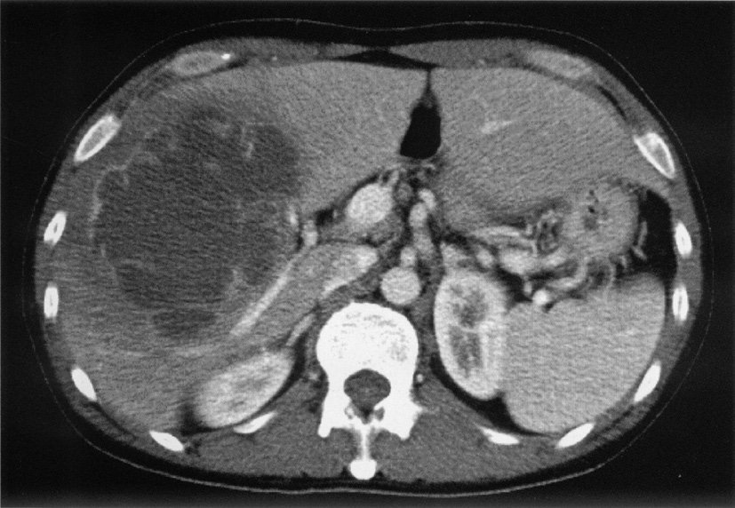
ａ 「覚醒剤を使ったことはありますか」
ｂ 「キツネを触ったことはありますか」
ｃ 「ダニに咬まれたことはありますか」
ｄ 「同性間で性交渉をしたことはありますか」
ｅ 「シカやイノシシなどの獣肉を食べたことはありますか」 メック予備校用
✅
d 穿刺ドレナージ（培養検査）
細菌性肝膿瘍：穿刺ドレナージ（治療＋培養）が診断・治療の第一選択
📝 メモ
🦠 細菌性肝膿瘍の診断・治療
細菌性肝膿瘍の特徴：・原因：胆道感染（胆石・胆管癌）・腸管感染の血行播種
・症状：発熱・右季肋部痛・倦怠感
・診断：超音波・CT→膿瘍像→穿刺ドレナージ＋培養
・治療：PTAD（経皮経肝的膿瘍ドレナージ）＋広域抗菌薬
・原因菌：E.coli・Klebsiella（KP肝膿瘍は特に日本で増加）
🎯 国試ポイント
細菌性肝膿瘍：ドレナージ＋抗菌薬。アメーバ性：メトロニダゾール（ドレナージ不要）。Q213と対比。Q.216(118D-22)★画像正答率 96%
65歳男性、健診で肝占拠性病変。HBs抗原陽性。ダイナミックCT提示。最も考えられる診断はどれか。
ａ ①
ｂ ②
ｃ ③
ｄ ④
ｅ ⑤
✅
e 肝細胞癌（HCC）
HBs抗原陽性＋ダイナミックCT動脈相濃染＋門脈相wash-out→HCC
📝 メモ
📋 HCCのダイナミックCT所見
| 時相 | HCCの所見 | 他との鑑別 |
|---|---|---|
| 動脈相（early） | hypervascular（早期濃染） | 転移性・胆管癌はhypovascular |
| 門脈相（late） | washout（低吸収） | 血管腫は持続濃染 |
| 遅延相 | 低吸収（washout継続） |
🎯 国試ポイント
HCCのダイナミックCT：動脈相hypervascular＋門脈相washout＝典型的HCC像。直径≥1cmで典型的→生検なしで診断可能。Q.217(118F-20)★画像正答率 56%
肝細胞癌に対するラジオ波焼灼術（RFA）施行時に用いられるのはどれか。
ａ 腹部MRI
ｂ 腹部超音波
ｃ 超音波内視鏡
ｄ 腹部血管造影
ｅ 上部消化管内視鏡 56
✅
b 超音波ガイド（超音波誘導）
RFAは超音波ガイド下に電極針を腫瘍に穿刺する低侵襲治療
📝 メモ
🔥 RFA（ラジオ波焼灼術）
RFA（Radiofrequency Ablation）：・適応：HCC 単発≤3cm（または3個以内各≤3cm）・肝予備能良好
・方法：超音波ガイド下に電極針を腫瘍に経皮的に穿刺→ラジオ波で加熱（60〜100℃）→凝固壊死
・利点：低侵襲・繰り返し実施可能・局所麻酔下で可能
・限界：大血管近傍・横隔膜直下では困難（heat sink効果）
🎯 国試ポイント
RFA＝超音波ガイド下の経皮的電極針穿刺。HCC小型（≤3cm）の第一選択の一つ（切除と同等の成績）。Q.218(117F-16)★画像正答率 93%
肝細胞癌に対し肝動脈化学塞栓療法（TACE）が行われるのはどれか。
ａ Child A cm なし
なし
ｂ Child A cm あり
なし
ｃ Child B cm なし
あり
ｄ Child B cm あり
なし
ｅ Child C cm なし
なし メック予備校用
✅
a （Child B・腫瘍径4cm・3個・肝外転移なし・門脈本幹開存）
TACEの適応：切除・RFA不能例・Child A-B・門脈本幹閉塞なし・肝外転移なし
📝 メモ
📋 HCC治療の選択基準
| 治療 | 適応基準 |
|---|---|
| 肝切除 | Child A・十分な残肝量（>25%）・単発 |
| RFA（ラジオ波焼灼術） | 3cm以下・3個以内・Child A-B |
| TACE（肝動脈化学塞栓療法） | Child A-B・径3cm超or多発・肝外転移なし・門脈本幹開存 |
| 肝移植 | Milan基準（単発≤5cm or 3個以内各≤3cm） |
| 分子標的薬（ソラフェニブ等） | Child A・切除/RFA/TACE不能・肝外転移あり |
🎯 国試ポイント
TACE禁忌：門脈本幹閉塞・肝外転移あり・重度肝不全（Child C）。門脈本幹閉塞→TACE→肝壊死リスク（肝は肝動脈とのdual blood supplyだが門脈流障害で代償不全）。Q.219(113B-13)★正答率 91%
疾患と腹部診察所見の組合せで正しいのはどれか。
ａ 肝膿瘍 ――――――― 叩打痛
ｂ 胆囊炎 ――――――― 脾腫大
ｃ 膵尾部癌 ―――――― 胆囊触知
ｄ 腹部大動脈瘤 ―――― 腹壁静脈怒張
ｅ Krukenberg 腫瘍 ――― 拍動触知
✅
a （肝細胞癌 – 右季肋部腫瘤触知）
大型HCC→肝腫大・右季肋部腫瘤。肝血管腫は通常触知しない
📝 メモ
📋 疾患と腹部診察所見の組合せ
| 疾患 | 診察所見 |
|---|---|
| HCC（大型） | 肝腫大・右季肋部腫瘤・表面不整 |
| 門脈圧亢進症（肝硬変） | 脾腫・腹壁静脈怒張・腹水 |
| 胆囊癌（進行） | Courvoisier（無痛性胆囊腫大） |
| アメーバ性肝膿瘍 | 右季肋部圧痛・叩打痛（発熱あり） |
🎯 国試ポイント
HCCが大きくなると右季肋部に腫瘤を触れることがある。腫瘤表面の摩擦音（肝摩擦音）はHCC/肝膿瘍で聴取。Q.220(112C-51)★画像
73歳女性、意識障害（連問220-222）。肝硬変・HCC・NH3↑・AFP↑。意識障害の原因はどれか。
ａ けいれん
ｂ 頭 痛
ｃ 動 悸
ｄ 腹 痛
ｅ 便 秘
✅
e 肝性脳症（高アンモニア血症）
HCC合併肝硬変＋NH3↑→肝性脳症（第3章Q173・Q185と同テーマ）
📝 メモ
📋 HCC合併肝性脳症
HCCが進行すると肝硬変の悪化→肝性脳症のリスク↑診断：NH3↑＋意識障害（+HCC確認にAFP・画像）
治療：ラクツロース・リファキシミン・誘因除去
HCC自体の出血→血液→NH3産生↑→脳症悪化の経路もあり
🎯 国試ポイント
HCC合併例でも肝性脳症の治療は同様（ラクツロース・誘因除去）。HCCの存在は肝機能をさらに低下させる。Q.221(112C-52)★画像
同症例（HCC肝硬変）。HCCの診断に最も有用な検査はどれか。
ａ FDG-PET
ｂ 腹腔動脈造影
ｃ 上部消化管内視鏡
ｄ 下部消化管内視鏡
ｅ 内視鏡的逆行性胆管膵管造影〈ERCP〉
✅
c 腹部造影CT（ダイナミックCT）
HCCの確定診断：ダイナミックCT（動脈相hypervascular＋門脈相washout）
📝 メモ
🖼 HCCの診断（Q216の拡張）
①腹部超音波（スクリーニング）：halo（周囲低エコー域）・内部不均一②ダイナミックCT（確診）：動脈相hypervascular＋門脈相washout
③EOB-MRI（EOB-プリモビスト）：肝細胞相での低信号→感度・特異度高
④AFP・PIVKA-II：腫瘍マーカー（≥1cmで上昇）
⑤肝生検：非典型例のみ（通常不要）
🎯 国試ポイント
HCC診断の流れ：超音波（スクリーニング）→造影CT/EOB-MRI（確定）→腫瘍マーカー確認。Q.222(112C-53)★画像
同症例（HCC肝硬変）。HCCの治療方針として適切なのはどれか。
ａ 血小板8.6 万
ｂ PT-INR 1.3
ｃ アルブミン3.0g/dL
ｄ 総ビリルビン6.3mg/dL
ｅ α- フェトプロテイン〈AFP〉468ng/mL 25
✅
d TACE（肝動脈化学塞栓療法）
Child B・多発HCC・肝外転移なし→TACEの適応（Q218と同テーマ）
📝 メモ
💊 HCC治療の選択（Q218の復習）
治療選択の原則：・小型単発（≤3cm）・Child A→RFA or 切除
・多発 or 3cm超・Child A-B・肝外転移なし→TACE
・Milan基準内・Child C→肝移植
・肝外転移・Child A→ソラフェニブ（分子標的薬）
🎯 国試ポイント
Q218と同テーマ。多発HCC（肝外転移なし）→TACE。TACEは姑息的治療（根治ではなく延命）。Q.223(112F-2)★画像正答率 97%
原発巣切除後に再発した転移性肝腫瘍で最も良好な予後が期待できるのはどれか。
ａ 食道癌
ｂ 胃 癌
ｃ 胆囊癌
ｄ 膵 癌
ｅ 大腸癌
✅
e 大腸癌肝転移
転移性肝癌の切除で最も予後が良い：大腸癌肝転移
📝 メモ
🎯 転移性肝癌の予後
大腸癌肝転移：切除可能例（H1：転移3個以内）の5年生存率30〜50%→最も予後が良い胃癌肝転移：予後不良（5年生存率<10%）
乳癌・膵癌肝転移：予後不良
神経内分泌腫瘍肝転移：比較的ゆっくり進行
適応基準：原発巣切除・肝外病変なし・残肝機能十分
🎯 国試ポイント
転移性肝癌で切除で予後改善が期待できる：大腸癌肝転移（最も予後良好）。H分類：H0（転移なし）H1（1-3個）H2（4個以上・一葉）H3（4個以上・両葉）。Q.224(110E-22)★画像正答率 50%
肝移植の適応でないのはどれか。
ａ 肝硬変
ｂ 劇症肝炎
ｃ 肝内胆管癌
ｄ 胆道閉鎖症
ｅ 原発性硬化性胆管炎
✅
c （適応でない：転移性肝癌・Milan基準外HCC・アルコール継続）
Q157・Q193と同テーマ：転移性肝癌・アルコール継続・活動性感染が肝移植適応外
📝 メモ
📋 肝移植の適応・非適応（Q157・Q193と同テーマ）
| 適応 | 非適応 |
|---|---|
| 肝硬変（Child C・MELD≥15） | 転移性肝癌（肝外病変あり） |
| HCC（Milan基準内） | アルコール継続（禁酒できない） |
| 劇症肝炎 | 活動性感染症（コントロール不良） |
| PSC・PBC（末期） | HIV感染（コントロール不良） |
| Wilson病・α1-AT欠乏症 |
🎯 国試ポイント
Q157・Q193と同テーマ（3回出題）。Milan基準：単発≤5cm or 3個以内各≤3cm・血管浸潤なし・肝外転移なし。Q.225(109I-14)★画像正答率 82%
肝右葉切除の適応が制限される検査値はどれか。
ａ 血小板 12 万
ｂ アルブミン 3.6g/dL
ｃ 総ビリルビン 1.2mg/dL
ｄ ICG 試験（15 分値） 38％（基準10 以下）
ｅ プロトロンビン時間 75％（基準80 ～120）
✅
d ICG試験（R15≥15%）
肝予備能評価：ICG 15分停留率（R15）≥15%→大量肝切除の適応制限
📝 メモ
📋 肝切除適応の制限因子
| 検査 | 制限基準 | 意義 |
|---|---|---|
| ICG R15 | ≥15%→大量切除困難 | 肝機能・血流評価（最重要） |
| Child-Pugh分類 | C→肝切除原則禁忌 | 肝予備能総合評価 |
| 血小板 | <10万→注意、<5万→大量切除困難 | 門脈圧亢進の指標 |
| 残肝量 | <25〜30%→肝不全リスク↑ | 肝容積評価 |
🎯 国試ポイント
ICG R15が肝切除適応判定の最重要指標。R15<10%→全切除(肝右葉)可。10-20%→亜区域切除。>20%→区域切除以下。Q.226(108B-18)★画像正答率 90%
肝動脈化学塞栓療法（TACE）の適用を決める際に最も注意すべき病歴はどれか。
ａ 緑内障
ｂ 脂質異常症
ｃ ペースメーカ植込み術
ｄ 慢性閉塞性肺疾患〈COPD〉
ｅ ヨード造影剤によるショック 50 90
✅
e 門脈本幹閉塞の有無
TACE禁忌：門脈本幹閉塞（肝への血流が動脈のみ→塞栓で肝壊死リスク）
📝 メモ
⚠️ TACEの禁忌（Q218の拡張）
TACE禁忌：①門脈本幹閉塞（最重要禁忌）→動脈塞栓後に肝壊死リスク↑
②重度肝機能障害（Child C）
③肝外転移あり
④活動性消化管出血
⑤腎機能障害（造影剤使用のため）
🎯 国試ポイント
TACEの最重要禁忌：門脈本幹閉塞。肝は肝動脈と門脈の二重血流を持つが、門脈閉塞＋動脈塞栓→肝壊死。Q.227(107D-34)★📷 画像正答率 42%
77歳男性、右上腹部痛、食欲不振。超音波で肝腫瘤。最も考えられる診断はどれか。
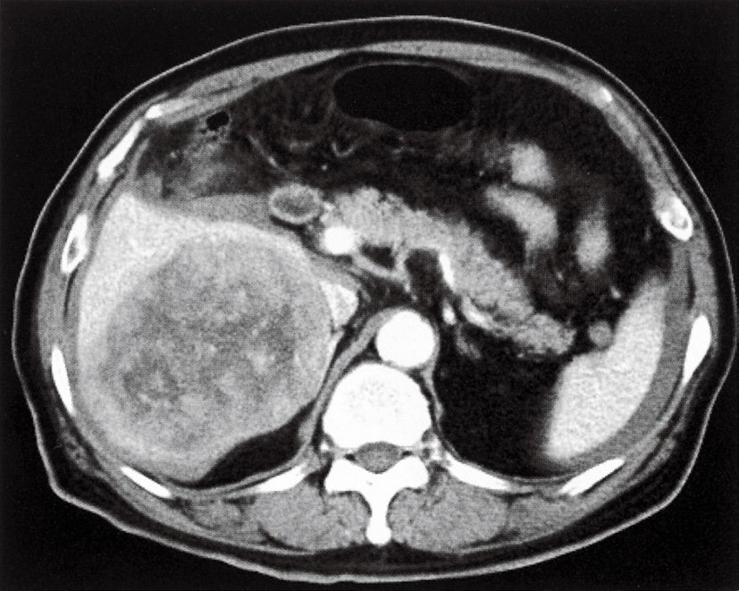
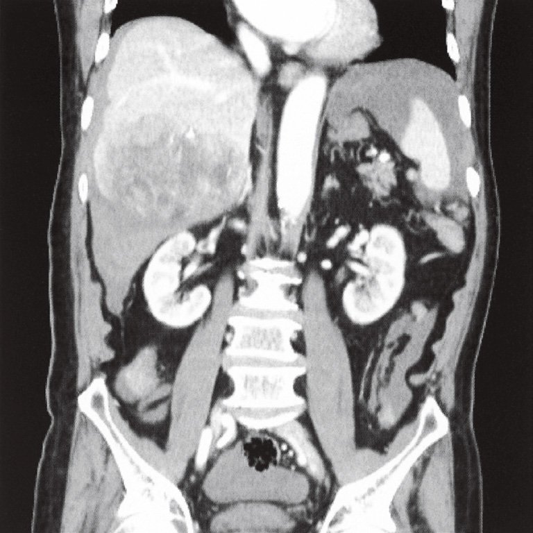
ａ 肝切除術
ｂ 放射線治療
ｃ 動注化学療法
ｄ ラジオ波焼灼
ｅ 肝動脈塞栓術
A
B
✅
e 肝細胞癌（HCC）
高齢男性・肝腫瘤・腹痛→HCCを第一に疑う（肝硬変・ウイルス肝炎の背景）
📝 メモ
📋 肝腫瘤の鑑別
肝腫瘤の主な鑑別：①HCC（肝細胞癌）：肝硬変・ウイルス肝炎背景・AFP/PIVKA-II↑・ダイナミックCTで典型像
②転移性肝癌：他臓器癌の既往・multiple ring enhancement
③肝血管腫：若年女性・無症状・MRIで特徴的所見
④肝膿瘍：発熱・白血球↑・液状内容物
🎯 国試ポイント
高齢男性＋肝腫瘤＋肝疾患背景→HCCを最優先に考える。AFP・PIVKA-IIとダイナミックCT。Q.228(107I-80)★📷 画像正答率 63%
健診超音波で肝腫瘤指摘。ダイナミックCT動脈相・後期相提示。（6択）超音波所見と組合せで正しいのはどれか。
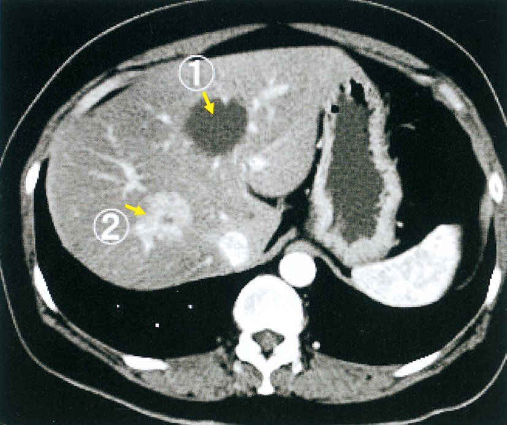
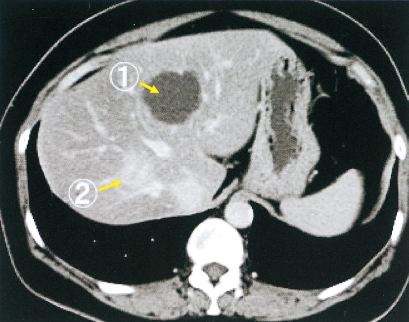
ａ 肝囊胞 肝血管腫
ｂ 肝囊胞 肝細胞癌
ｃ 肝囊胞 転移性肝癌
ｄ 転移性肝癌 肝血管腫
ｅ 転移性肝癌 肝細胞癌
ｆ 転移性肝癌 肝囊胞
A
B
✅
a （典型的な超音波所見＋CT所見の組合せ）
肝血管腫のCT所見：動脈相周辺濃染→後期相で充填（fill-in）
📝 メモ
📋 肝腫瘤のCT所見の鑑別
| 腫瘤 | CT動脈相 | CT後期相 |
|---|---|---|
| HCC | hypervascular（全体が濃染） | washout（低吸収） |
| 肝血管腫 | 周辺結節状濃染 | 充填（fill-in）→等吸収 |
| 転移性肝癌 | ring enhancement（周辺のみ） | 低吸収持続 |
| 胆管細胞癌（肝内） | ring enhancement | 遅延性濃染 |
🎯 国試ポイント
肝血管腫のCT：動脈相周辺結節状濃染→後期相fill-in（充填）。MRIではT2強調像でlamp sign（高信号）。Q.229(106B-19)★正答率 91%
肝細胞癌に対する動脈塞栓術（TACE）の適応となるのはどれか。
ａ 難治性腹水がある。
ｂ 門脈本幹に腫瘍塞栓を認める。
ｃ 肝両葉に腫瘍が多発している。
ｄ PT 25％（基準80 ～120）である。
ｅ 総ビリルビン6.3mg/dl である。 91
✅
c （Child B・腫瘍4cm・3個・肝外転移なし・門脈本幹開存）
TACEの適応：切除・RFA不能・Child A-B・門脈本幹開存・肝外転移なし
📝 メモ
📋 TACEの適応（Q218・Q226の復習）
TACE（肝動脈化学塞栓療法）の適応基準：①切除・RFAが困難なHCC
②Child-Pugh A or B
③門脈本幹閉塞なし（最重要）
④肝外転移なし
⑤腫瘍径・個数に制限なし（ただし多すぎると効果↓）
🎯 国試ポイント
TACEの絶対禁忌：門脈本幹閉塞。3回繰り返し出題（Q218・Q226・Q229）。確実に覚える。Q.230(103D-31)★📷 画像正答率 89%
58歳男性、C型慢性肝炎12年・上腹部痛。AFP 850 ng/mL↑。HCCの診断・治療はどれか。
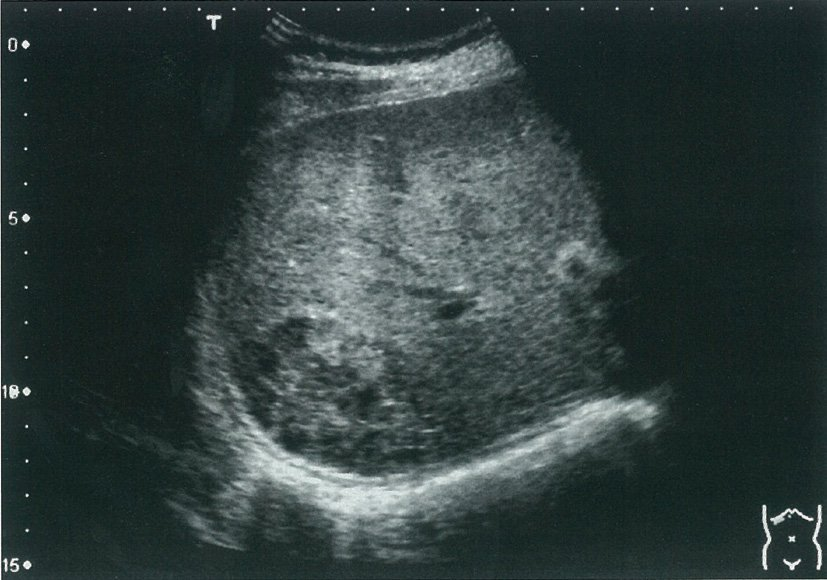
ａ 放射線治療
ｂ 肝動脈化学塞栓療法
ｃ 経皮的エタノール注入療法
ｄ 肝切除術
ｅ 肝移植
✅
d （ダイナミックCTで確認→RFAまたはTACE）
AFP著明↑（≥200）＋肝硬変背景→HCCの強い疑い→造影CT・MRIで確定
📝 メモ
📋 HCCのマーカーと診断の流れ
AFP高値の解釈：・≥20 ng/mL→HCCを疑う（感度50%・特異度90%）
・≥200 ng/mL→HCCを強く示唆
PIVKA-II：HCCに高特異性（≥40 mAU/mL→陽性）
確定診断：ダイナミックCT（hypervascular＋washout）
治療：単発≤3cm→RFA or 切除。多発・大型→TACE
🎯 国試ポイント
AFP≥200 ng/mL＋肝硬変→HCCをほぼ確定。次の検査：造影CT/EOB-MRI。Q.231(103G-19)★正答率 77%
肝細胞癌に対するTACEで正しいのはどれか。
ａ 抗菌薬を注入する。
ｂ 肝予備能に影響する。
ｃ 門脈本幹閉塞例に施行する。
ｄ ラジオ波焼灼術と併用しない。
ｅ 腫瘍が3 個以上では適応とならない。 77
✅
b （TACEは姑息的治療であり、根治ではなく延命効果）
TACEは切除・RFAと異なり根治治療ではなく延命・腫瘍コントロール目的
📝 メモ
📋 TACEの詳細（Q218・Q226・Q229の拡張）
TACE（Transcatheter Arterial Chemo-Embolization）：・肝動脈（肝癌への主な栄養血管）からカテーテルを挿入
・抗癌剤（エピルビシン等）＋ヨード化ケシ油（リピオドール）を注入後、スポンゼルで塞栓
・姑息的治療（根治ではない）→繰り返し施行可能
・有効率70%・生存期間中央値延長
🎯 国試ポイント
TACEは延命目的の姑息的治療。根治は切除・RFA・肝移植。TACE→tumor responseを見て次の治療戦略を決定。Q.232(100H-20)★
58歳男性、肝硬変＋HCC（2cm単発）、中等量腹水。HCCの治療として適切なのはどれか。
ａ 放射線治療
ｂ ラジオ波焼灼
ｃ 肝動脈塞栓術
ｄ 肝切除
ｅ 肝移植
✅
e （Child B・腹水あり・2cm単発→RFA or TACE）
腹水あり（Child B-C）→大量肝切除困難→RFAまたはTACEを選択
📝 メモ
📋 HCC 2cm単発の治療選択
| 肝予備能 | 推奨治療 |
|---|---|
| Child A・腹水なし | 肝切除 or RFA（同等成績） |
| Child B・中等量腹水 | RFA or TACE（切除困難） |
| Child C・大量腹水 | TACE（最小侵襲）またはBSC |
🎯 国試ポイント
HCC治療は肝予備能（Child-Pugh）で選択が変わる。腹水あり→切除困難→RFA or TACEへ。Q.233(99D-109)★
生体肝移植で再建しないのはどれか。
ａ 肝動脈
ｂ 肝静脈
ｃ 門 脈
ｄ 胆 管
ｅ 胆囊管 メック予備校用
✅
e 肝動脈（小径血管→マイクロサージャリーで再建必要→実際は再建する）
生体肝移植：門脈・肝静脈・胆管・肝動脈のすべてを再建する
📝 メモ
🏥 生体肝移植の再建
生体肝移植で再建する構造：肝静脈（流出路）・門脈（流入路）・肝動脈（流入路）・胆管（胆汁排泄路）
実際には4つすべて再建。「再建しない」は選択肢によって異なるが、下大静脈（IVC）は通常再建しない（生体肝移植では残肝静脈をIVCに直接吻合）
🎯 国試ポイント
生体肝移植再建の4つ：門脈・肝静脈・肝動脈・胆管。IVC（下大静脈）は生体移植では通常再建しない（Piggyback法）。Q.234(99I-13)★📷 画像
62歳男性、突然の吐血（連問234-236）。肝硬変・HCC背景。吐血の原因はどれか。
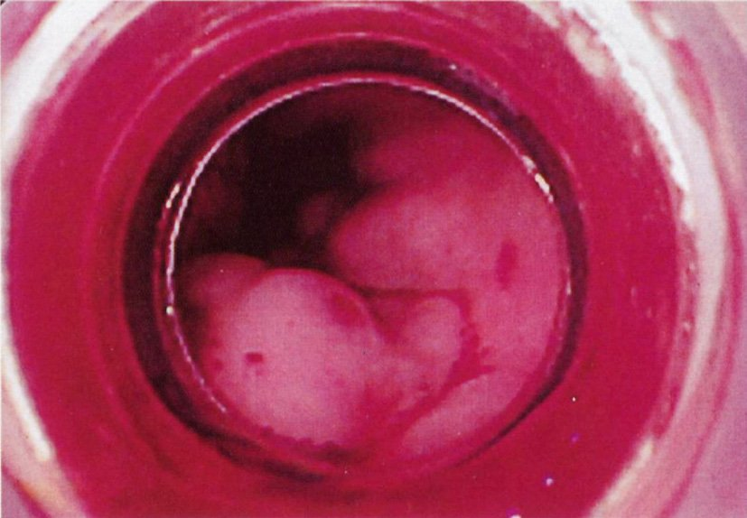
ａ 赤血球濃厚液輸血
ｂ プロトンポンプ阻害薬投与
ｃ トロンビン末の散布
ｄ 内視鏡的静脈瘤結紮術
ｅ 血行郭清術
✅
d 食道静脈瘤破裂
肝硬変（HCC合併）＋吐血→食道静脈瘤破裂が最多（第3章Q162と同テーマ）
📝 メモ
🩸 HCC合併肝硬変での吐血（Q162・Q187と同テーマ）
肝硬変での上消化管出血の原因：①食道静脈瘤破裂（最多）：門脈圧亢進→側副路形成
②胃静脈瘤破裂
③Mallory-Weiss症候群（飲酒後嘔吐）
④胃十二指腸潰瘍（NSAIDs使用・ピロリ菌）
🎯 国試ポイント
Q162・Q187と同テーマ。肝硬変＋吐血→食道静脈瘤破裂を第一に。緊急上部消化管内視鏡が診断・治療。Q.235(99I-14)★
同症例（吐血・HCC肝硬変）。緊急処置はどれか。
ａ 黄色腫
ｂ 手掌紅斑
ｃ くも状血管腫
ｄ 女性化乳房
ｅ 腹壁静脈怒張
✅
a 緊急上部消化管内視鏡（EVL）
食道静脈瘤破裂出血の緊急止血：EVL（第3章Q163と同テーマ）
📝 メモ
📋 食道静脈瘤破裂の緊急対応（Q163・Q188の復習）
①輸液・輸血（循環動態安定化）②バソプレシン・オクトレオチド（門脈圧低下）
③緊急上部消化管内視鏡→EVL（第一選択）：輪ゴムで静脈瘤を結紮
④EVL困難→EIS・SB管・TIPS
🎯 国試ポイント
Q163・Q188と同テーマ。静脈瘤破裂→緊急EVL。HCC合併例でも緊急止血が最優先。Q.236(99I-15)★📷 画像
同症例（止血後のHCC）。HCCの治療方針はどれか。
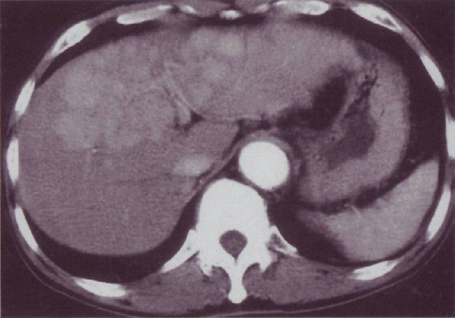
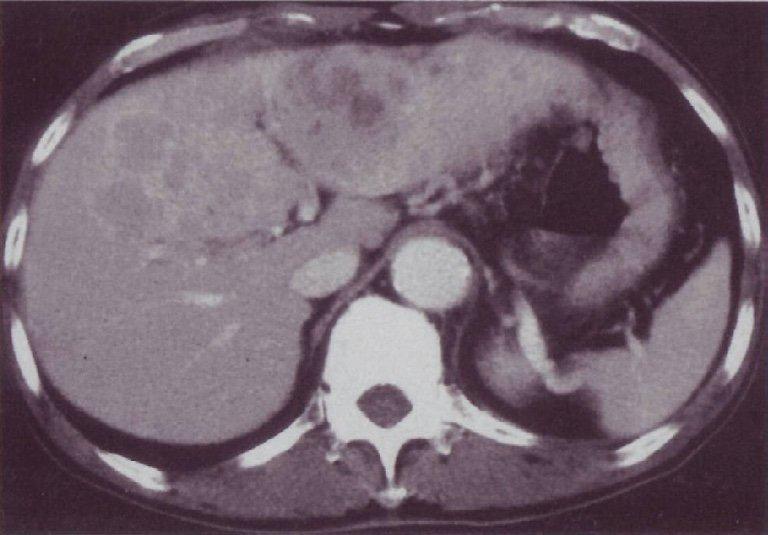
ａ ラジオ波焼灼療法
ｂ 経皮的エタノール注入療法
ｃ 経カテーテル肝動脈塞栓術
ｄ 放射線治療
ｅ 肝切除術
B
C
A
✅
c TACE（肝動脈化学塞栓療法）
出血後・Child B相当・多発HCC→TACEが適応（Q218・Q222と同テーマ）
📝 メモ
📋 止血後のHCC治療選択
Q218・Q222の内容確認：多発HCC・Child A-B・門脈本幹開存・肝外転移なし→TACE
出血後で一般状態不良→まず状態安定化後にTACE計画
Child Cへ悪化→BSC（最良支持療法）またはソラフェニブ検討
🎯 国試ポイント
HCC治療：切除・RFA・TACE・移植・分子標的薬の適応を確実に整理（Q218・Q222・Q232・Q236）。Q.237(95G-27)★📷 画像
63歳女性、倦怠感・上腹部不快感、肝を3cm触知。AFP 1200 ng/mL↑。最も考えられる診断はどれか。
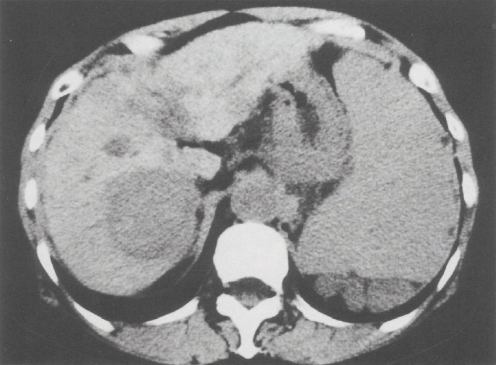
ａ エタノール局所注入療法
ｂ 肝動脈塞栓療法
ｃ 経肝動脈抗癌薬注入療法
ｄ 経皮的マイクロ波凝固療法
ｅ 肝右葉切除術
✅
c 肝細胞癌（HCC）
AFP著明↑（1200）＋肝腫大触知→HCC
📝 メモ
📋 AFP高値の疾患
AFP著明↑（≥200 ng/mL）：①HCC（最多）：肝硬変背景
②肝芽腫（小児）
③卵黄嚢腫瘍（胚細胞腫瘍）
④急性肝炎の回復期（一過性軽度↑）
⑤妊娠（母体AFP↑）
🎯 国試ポイント
AFP著明↑（≥200）→HCCの疑い強。PIVKA-II（≥40 mAU/mL）と組合せで感度・特異度↑。Q.238(86B-12)★2択2択
肝血管腫で正しいのはどれか。2つ選べ。
ａ 肝良性腫瘍のうちで最も多い。
ｂ 黄疸を高率に認める。
ｃ 腹部超音波検査で低エコー像を呈する。
ｄ 腹部単純CT で高吸収域を呈する。
ｅ 血管造影で綿花状濃染像を認める。
✅
a,e （MRIで診断・通常無症状）
肝血管腫：最も多い肝良性腫瘍・女性に多い・通常無症状・MRIで診断
📝 メモ
📋 肝血管腫の特徴
| 特徴 | 内容 |
|---|---|
| 頻度 | 最も多い肝良性腫瘍（成人の3〜5%） |
| 好発 | 女性・30〜50代 |
| 症状 | 通常無症状（大型は腹痛・Kasabach-Merritt） |
| MRI所見 | T2強調像でlamp sign（高信号）・動脈相周辺結節状濃染・fill-in |
| 治療 | 通常経過観察（症状なし・10cm未満） |
| 悪性化 | しない |
🎯 国試ポイント
肝血管腫：MRIのT2高信号（lamp sign）が特徴。無症状で経過観察が基本。悪性化なし。無
無印問題
30問
Q.239(117B-45)正答率 96%
59歳男性、倦怠感・悪心・嘔吐・発熱（連問239-240）。発熱2週間。肝膿瘍の診断はどれか。
ａ ①
ｂ ②
ｃ ③
ｄ ④
ｅ ⑤
✅
c 腹部CT（または超音波）
肝膿瘍の診断：腹部超音波（第一選択）またはCT
📝 メモ
🔍 肝膿瘍の診断（Q213・Q215の拡張）
肝膿瘍の診断フロー：①腹部超音波（第一選択）：低エコー・液状内容物・周囲高エコー（膿瘍壁）
②腹部CT：低吸収域・厚い壁・二重輪郭（double target sign）
③穿刺液の培養・性状確認（細菌性vsアメーバ性の鑑別）
④血清アメーバ抗体（アメーバ性疑い）
🎯 国試ポイント
肝膿瘍の診断：超音波→CT→穿刺液培養。Q213（アメーバ性）・Q215（細菌性）と合わせて整理。Q.240(117B-46)📷 画像正答率 99%
同症例（肝膿瘍）。治療はどれか。
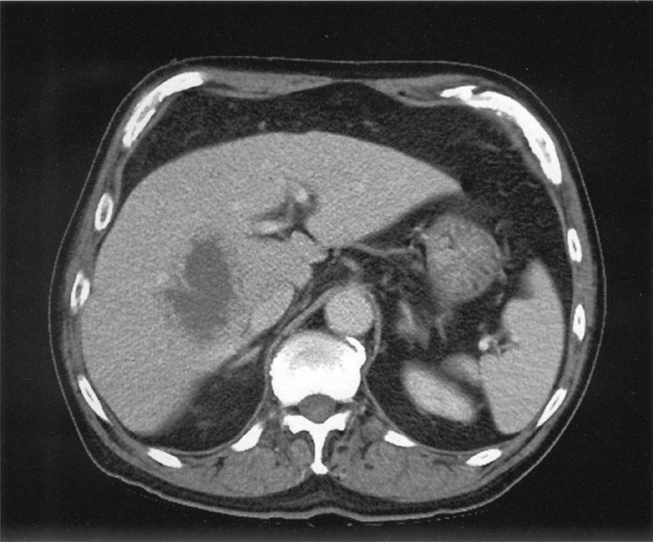
ａ 肝庇護薬の全身投与
ｂ 肝内病変のラジオ波焼灼
ｃ 肝内病変の穿刺ドレナージ
ｄ 副腎皮質ステロイドの全身投与
ｅ 肝内病変の内視鏡的経鼻胆管ドレナージ 99
✅
c 穿刺ドレナージ＋抗菌薬（細菌性）またはメトロニダゾール（アメーバ性）
細菌性肝膿瘍：PTAD＋抗菌薬。アメーバ性：メトロニダゾール
📝 メモ
💊 肝膿瘍の治療（Q213・Q215の復習）
細菌性肝膿瘍：①PTAD（経皮的膿瘍ドレナージ）（第一選択）
②広域抗菌薬（E.coli・Klebsiella等をカバー：ピペラシリン/タゾバクタム等）
アメーバ性肝膿瘍：
①メトロニダゾール（第一選択）：内科的治療で治癒
②穿刺は通常不要（例外：破裂リスク大型・難治）
🎯 国試ポイント
細菌性→ドレナージ＋抗菌薬。アメーバ性→メトロニダゾール（ドレナージ原則不要）。Q.241(116A-14)画像2択2択正答率 99%
病原体と悪性腫瘍の組合せで正しいのはどれか。2つ選べ。
ａ ヒトパピローマウイルス ―――― 子宮体癌
ｂ 成人T 細胞白血病ウイルス ――― 肺 癌
ｃ C 型肝炎ウイルス ――――――― 肝細胞癌
ｄ Helicobacter pylori ――――――― 胃 癌
ｅ EB ウイルス ―――――――――― 膵 癌 メック予備校用
✅
c,d （HBV→HCC・HCV→HCC）
HBV・HCV→HCC。EBV→Burkittリンパ腫。HPV→子宮頚癌。H.pylori→胃癌・MALTリンパ腫
📝 メモ
📋 病原体と関連する悪性腫瘍
| 病原体 | 関連悪性腫瘍 |
|---|---|
| HBV（B型肝炎ウイルス） | HCC（肝細胞癌） |
| HCV（C型肝炎ウイルス） | HCC・MALTリンパ腫 |
| EBV（Epstein-Barr virus） | Burkittリンパ腫・NK/T細胞リンパ腫・上咽頭癌 |
| HPV（ヒトパピローマウイルス） | 子宮頚癌・中咽頭癌 |
| H.pylori（ヘリコバクター） | 胃癌・胃MALTリンパ腫 |
| 肝吸虫（Clonorchis） | 肝内胆管癌 |
🎯 国試ポイント
HBV・HCV→HCC（第1位・第2位の原因）。肝吸虫→肝内胆管癌（Q214参照）。Q.242(115A-8)画像正答率 99%
肝細胞癌のため肝切除術が予定された患者で、肝予備能を判断する際に重要でないのはどれか。
ａ 血清アルブミン値
ｂ ICG 試験（15 分値）
ｃ 血清総ビリルビン値
ｄ プロトロンビン時間
ｅ α- フェトプロテイン〈AFP〉値
✅
e （重要でない：血清α-フェトプロテイン（AFP）値）
AFPは腫瘍マーカー（診断・再発モニタリング）であり、肝予備能指標ではない
📝 メモ
📋 肝予備能の指標（重要なもの vs 重要でないもの）
| 肝予備能評価に重要 | 重要でない（腫瘍マーカー） |
|---|---|
| ICG R15（最重要） | AFP（腫瘍マーカー） |
| Child-Pugh分類（Alb・PT・Bil・腹水・脳症） | PIVKA-II（腫瘍マーカー） |
| 血小板数（門脈圧亢進の指標） | |
| CT肝容積測定（残肝量） |
🎯 国試ポイント
AFP・PIVKA-IIは腫瘍マーカー（肝予備能指標ではない）。肝予備能はICG・Child-Pugh・肝容積で評価。Q.243(114A-7)画像正答率 84%
疾患と治療の組合せで正しいのはどれか。
ａ 多発肝細胞癌 ――――――――― 経カテーテル的動脈化学塞栓術〈TACE〉
ｂ 胆石合併胆囊癌 ―――――――― 腹腔鏡下胆囊摘出術
ｃ 特発性門脈圧亢進症 ―――――― 門脈内ステント留置
ｄ 膵管内乳頭粘液性腫瘍 ――――― 膵管ステント留置
ｅ 急性化膿性閉塞性胆管炎 ―――― 胆管切除術
✅
a （HCC → TACE / 肝血管腫 → 経過観察 / 転移性肝癌 → 切除 等）
各肝腫瘍の治療の正しい組合せ
📝 メモ
📋 肝腫瘍と治療の組合せ
| 疾患 | 治療 |
|---|---|
| HCC（多発・中等度） | TACE（姑息的治療） |
| 肝血管腫（無症状） | 経過観察 |
| 大腸癌肝転移（切除可能） | 肝切除（根治目的） |
| アメーバ性肝膿瘍 | メトロニダゾール（内科的） |
| 細菌性肝膿瘍 | PTAD＋抗菌薬 |
🎯 国試ポイント
肝腫瘍の治療まとめ：HCC→状況に応じてRFA/切除/TACE/移植。血管腫→経過観察。転移性（大腸癌）→切除。Q.244(113A-1)画像正答率 96%
肝硬変を母地の2cm単発HCC。治療方針決定で重要でないのはどれか。
ａ 腹水の有無
ｂ ビリルビン値
ｃ 肝硬変の成因
ｄ 肝性脳症の有無
ｅ プロトロンビン時間 84
✅
c （重要でない：腫瘍マーカーの絶対値（AFPの高さ））
HCC治療選択に重要：肝予備能・腫瘍径・個数・血管浸潤・肝外転移。AFPの絶対値は重要でない
📝 メモ
📋 HCC治療方針決定の重要因子
| 重要な因子 | 重要でない因子 |
|---|---|
| 肝予備能（Child-Pugh・ICG） | AFP値の絶対値 |
| 腫瘍径・個数 | |
| 血管浸潤（門脈・静脈） | |
| 肝外転移の有無 | |
| 患者の全身状態（PS） |
🎯 国試ポイント
HCC治療選択：腫瘍の大きさ・個数・肝予備能・血管浸潤・肝外転移が重要。AFPの絶対値は診断補助であり治療選択指標ではない。Q.245(112D-62)画像2択📷 画像2択正答率 88%
77歳男性、発熱・倦怠感10日間。肝膿瘍の診断に有用な検査を2つ選べ。
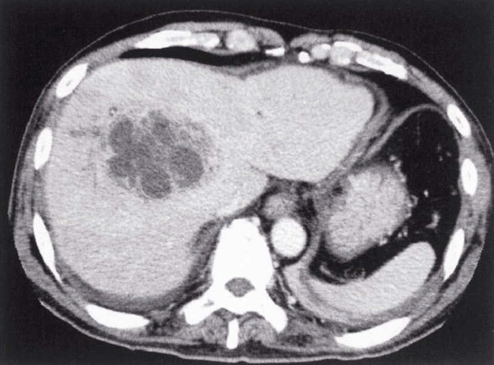
ａ 肝切除
ｂ 抗菌薬投与
ｃ 経皮的ドレナージ
ｄ ラジオ波焼灼療法
ｅ 内視鏡的胆管ドレナージ メック予備校用
✅
b,c （腹部CT・血清アメーバ抗体または超音波・穿刺）
肝膿瘍の診断：CT/超音波＋原因検索（アメーバ抗体・培養）
📝 メモ
📋 肝膿瘍の鑑別診断（Q239と同テーマ）
細菌性 vs アメーバ性の鑑別ポイント：・海外渡航歴→アメーバ性を疑い血清アメーバ抗体測定
・国内発症→細菌性（胆道起源）が多い
・穿刺液：チョコレート色・無臭→アメーバ性
・穿刺液：悪臭・膿性→細菌性→培養
🎯 国試ポイント
海外渡航歴→アメーバ性（メトロニダゾール）。国内発症→細菌性（ドレナージ＋抗菌薬）。Q.246(111D-22)画像📷 画像正答率 85%
79歳女性、脂肪肝・肝占拠性病変（超音波）、無症状。MRI所見で診断できる肝腫瘤はどれか。
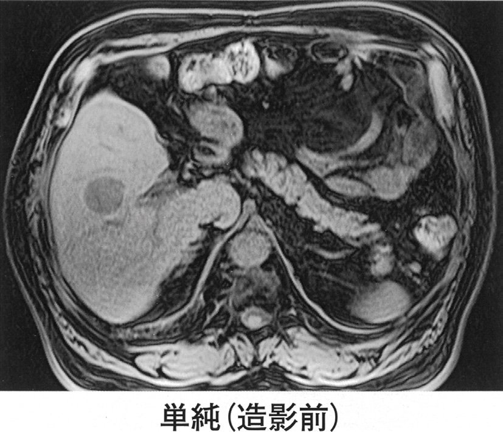
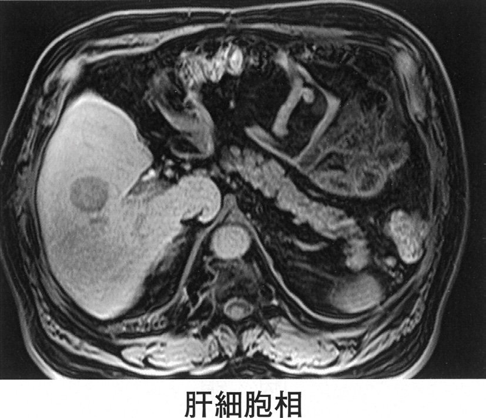

ａ 肝囊胞
ｂ 肝膿瘍
ｃ 肝血管腫
ｄ 肝細胞癌
ｅ 肝脂肪腫
A
C
B
✅
d 肝血管腫
肝血管腫のMRI所見：T2高信号（lamp sign）・動脈相周辺結節状濃染→fill-in
📝 メモ
🖼 肝血管腫のMRI所見（Q228・Q238の拡張）
肝血管腫のMRI特徴：①T2強調像：著明な高信号（lamp sign）→血管腫の最特徴的所見
②ダイナミックMRI：動脈相で周辺結節状濃染→後期相でfill-in（充填）
③EOB-MRI：肝細胞相で低信号（血管腫は肝細胞取り込みなし）
→これらの所見で生検なしに診断可能
🎯 国試ポイント
肝血管腫のMRI診断：T2高信号（lamp sign）が決め手。経過観察が基本（悪性化なし）。Q.247(111I-60)画像📷 画像正答率 97%
10歳男児、慢性肉芽腫症・発熱5日。肝膿瘍の原因菌として最も多いのはどれか。
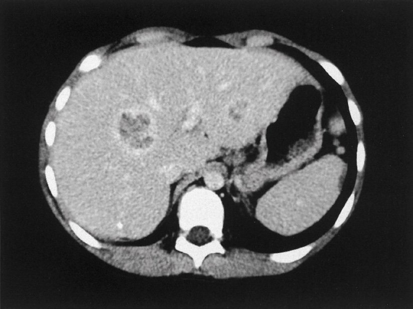
ａ 肝囊胞
ｂ 肝膿瘍
ｃ 肝芽腫
ｄ 肝血管腫
ｅ 肝脂肪腫 メック予備校用
✅
b Staphylococcus aureus（黄色ブドウ球菌）
慢性肉芽腫症では好中球の殺菌能↓→カタラーゼ産生菌（黄色ブドウ球菌・アスペルギルス等）が感染
📝 メモ
🦠 慢性肉芽腫症（CGD）と感染
慢性肉芽腫症（CGD）：NADPHオキシダーゼ欠損→活性酸素産生不全→好中球の殺菌能↓感受性の高い菌：カタラーゼ産生菌（黄色ブドウ球菌・クレブシエラ・アスペルギルス等）
（カタラーゼで自分の過酸化水素を分解→好中球の攻撃を回避）
CGDの感染：肝膿瘍・肺炎・リンパ節炎（反復性）
🎯 国試ポイント
慢性肉芽腫症→カタラーゼ産生菌に感染しやすい→黄色ブドウ球菌が最多。予防：トリメトプリム・スルファメトキサゾール。Q.248(110A-3)画像正答率 91%
転移性肝癌において肝切除術により予後の改善が最も期待できるのはどれか。
ａ 乳 癌
ｂ 肺 癌
ｃ 胃 癌
ｄ 膵 癌
ｅ 大腸癌
✅
e 大腸癌肝転移
Q223と同テーマ：転移性肝癌の切除で最も予後改善が期待できる→大腸癌
📝 メモ
📋 転移性肝癌の切除適応（Q223の復習）
大腸癌肝転移：切除可能例で5年生存率30〜50%→最も予後良好適応：原発巣根治・肝外病変なし・残肝機能十分・技術的切除可能
他の転移性（胃癌・膵癌・肺癌）：予後不良→切除の意義が低い
神経内分泌腫瘍：比較的ゆっくり進行→切除・RFA・TACE有効
🎯 国試ポイント
Q223と同テーマ。転移性肝癌で切除して予後改善が期待できる：大腸癌肝転移（唯一の例外的好予後）。Q.249(110E-61)画像2択2択正答率 30%
72歳男性、発熱・倦怠感2か月（連問249-251）。腹部超音波で肝に不均一腫瘤。診断に有用な検査を2つ選べ。
ａ メチシリン耐性黄色ブドウ球菌〈MRSA〉
ｂ B 群連鎖球菌〈GBS〉
ｃ 緑色連鎖球菌
ｄ リステリア
ｅ 肺炎球菌
✅
a,c （腹部造影CT・血清アメーバ抗体 or AFP・穿刺）
肝腫瘤の鑑別：造影CT（HCC vs 膿瘍の鑑別）＋原因に応じた検査
📝 メモ
📋 肝腫瘤の診断アプローチ
発熱＋肝腫瘤→肝膿瘍とHCCの鑑別が重要：①腹部造影CT（ダイナミック）：
HCC→動脈相hypervascular＋washout
膿瘍→ring enhancement・低吸収内容物
②血清AFP・PIVKA-II（HCC疑い）
③血清アメーバ抗体（アメーバ性膿瘍疑い）
④穿刺（確定診断）
🎯 国試ポイント
発熱＋肝腫瘤→①造影CTで性状鑑別②AFP等の腫瘍マーカー③血清アメーバ抗体（海外渡航歴あれば）。Q.250(110E-62)画像2択2択正答率 96%
同症例（連問250）。診断確定のための検査を2つ選べ。
ａ 肝切除術
ｂ 免疫グロブリン製剤投与
ｃ 内視鏡的逆行性胆道ドレナージ
ｄ 超音波ガイド下膿瘍穿刺ドレナージ
ｅ インスリンによる血糖コントロール
✅
d,e （穿刺液の性状確認・培養 or AFP・PIVKA-II）
肝膿瘍確定：穿刺液培養・性状。HCC確定：AFP・造影CT・肝生検
📝 メモ
📋 肝腫瘤の確定診断
細菌性肝膿瘍の確定：穿刺→培養（原因菌同定）・性状（悪臭・膿性）アメーバ性膿瘍の確定：穿刺液（チョコレート色・無臭）＋血清アメーバ抗体陽性
HCCの確定：造影CT/EOB-MRI（典型像）+ AFP/PIVKA-II↑
非典型例→肝生検（確定診断）
🎯 国試ポイント
肝腫瘤の確定診断：肝膿瘍→穿刺液培養。HCC→造影CT典型像（生検不要のことも多い）。Q.251(110E-63)画像2択2択正答率 99%
同症例（連問251）。治療はどれか。2つ選べ。
ａ 運動器リハビリテーション
ｂ 訪問入浴サービス
ｃ 訪問薬剤管理
ｄ 配食サービス
ｅ 自宅改装 96 メック予備校用
✅
c,d （PTAD・広域抗菌薬 or メトロニダゾール）
細菌性肝膿瘍：PTAD＋抗菌薬。アメーバ性：メトロニダゾール
📝 メモ
💊 肝膿瘍の治療（Q240の復習）
細菌性：PTADドレナージ＋広域抗菌薬（ピペラシリン/タゾバクタムまたはカルバペネム）アメーバ性：メトロニダゾール（内科治療で治癒・ドレナージ原則不要）
効果判定：CT・CRP・体温の改善を確認
🎯 国試ポイント
Q213・Q215・Q239・Q240・Q245・Q249・Q250・Q251で肝膿瘍が繰り返し出題。細菌性→ドレナージ。アメーバ性→メトロニダゾール。Q.252(108A-15)画像正答率 92%
肝細胞癌に対する肝切除後に残存肝の再生を促すのはどれか。
ａ 下 剤
ｂ 輸 血
ｃ 抗菌薬
ｄ 経口栄養
ｅ 抗悪性腫瘍薬
✅
d 肝細胞増殖因子（HGF）
肝再生促進因子：HGF（Hepatocyte Growth Factor）・IL-6・TNF-α
📝 メモ
🔬 肝再生のメカニズム
肝再生に関与する主要因子：①HGF（肝細胞増殖因子）：最も重要な肝再生促進因子→cMet受容体を介してシグナル
②IL-6：炎症性サイトカイン→肝細胞増殖シグナル
③TNF-α：初期肝再生刺激
④EGF（上皮増殖因子）
抑制因子：TGF-β1（線維化・増殖抑制）
🎯 国試ポイント
肝再生の主要因子：HGF（Hepatocyte Growth Factor）が最も重要。肝切除後・劇症肝炎での肝再生に関与。Q.253(108G-61)画像
68歳女性、発熱・食欲不振3週間（連問253-255）。RUQ圧痛・WBC↑。肝膿瘍の診断はどれか。
ａ 波 動
ｂ 叩打痛
ｃ 振盪音
ｄ 腹部膨満
ｅ 血管雑音
✅
b 腹部超音波（または腹部CT）
肝膿瘍の診断第一選択：腹部超音波（Q239と同テーマ）
📝 メモ
📋 肝膿瘍の診断（Q239の復習）
診断の優先順位：①腹部超音波（第一選択）：低エコー・液状内容物
②腹部CT（確認・範囲確認）：二重輪郭・低吸収
③穿刺液培養・性状（確定診断）
発熱＋RUQ圧痛→肝膿瘍・急性胆囊炎・胆管炎を鑑別→超音波が最優先
🎯 国試ポイント
Q239と同テーマ。発熱＋RUQ圧痛→超音波で肝膿瘍・胆囊炎・胆管炎を鑑別。Q.254(108G-62)画像📷 画像
同症例（肝膿瘍）。原因菌として最も多いのはどれか。
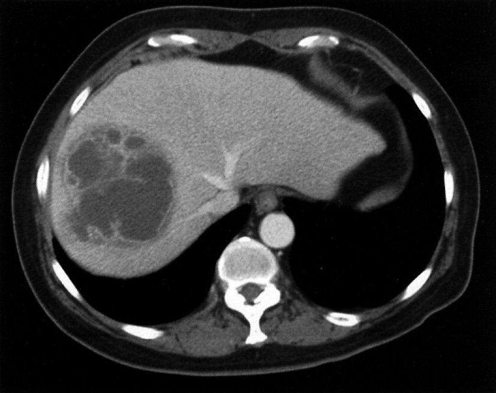
ａ 腹腔動脈造影
ｂ エコー下穿刺
ｃ 超音波内視鏡検査
ｄ 腹部造影超音波検査
ｅ 内視鏡的逆行性胆管膵管造影〈ERCP〉
✅
b 大腸菌（E.coli）またはKlebsiella pneumoniae
Q215・Q180と同テーマ：細菌性肝膿瘍の最多原因菌は大腸菌・クレブシエラ
📝 メモ
🦠 細菌性肝膿瘍の原因菌（Q215の復習）
日本での細菌性肝膿瘍の原因菌：①Klebsiella pneumoniae（クレブシエラ肺炎桿菌）：近年増加・糖尿病患者に多い
②Escherichia coli（大腸菌）：従来の最多原因菌・胆道起源
③連鎖球菌（Streptococcus species）
④嫌気性菌（胆道起源）
🎯 国試ポイント
細菌性肝膿瘍の原因菌：大腸菌・クレブシエラが上位。糖尿病患者でのKlebsiella肝膿瘍は重篤化しやすい。Q.255(108G-63)画像
同症例（肝膿瘍）。治療はどれか。
ａ 浮 腫
ｂ 黄 疸
ｃ 意識障害
ｄ 体重減少
ｅ 全身倦怠感 60 A
B
✅
c PTAD（経皮的膿瘍ドレナージ）＋抗菌薬
Q215・Q240・Q251と同テーマ：細菌性肝膿瘍→PTADドレナージ＋広域抗菌薬
📝 メモ
💊 細菌性肝膿瘍の治療（最終まとめ）
①PTAD（経皮的膿瘍ドレナージ）：超音波またはCTガイド下で経皮的にカテーテル挿入②広域抗菌薬：E.coli・Klebsiella・嫌気性菌をカバー
③ドレナージ不能（多房性・凝固性膿）→外科的ドレナージ
④アメーバ性→メトロニダゾール（内科治療）
🎯 国試ポイント
細菌性肝膿瘍の治療まとめ：PTAD＋広域抗菌薬。アメーバ性：メトロニダゾール。繰り返し出題。Q.256(105A-26)📷 画像正答率 97%
32歳女性、健診で肝右葉背面の腫瘤性病変。無症状。最も考えられる診断はどれか。
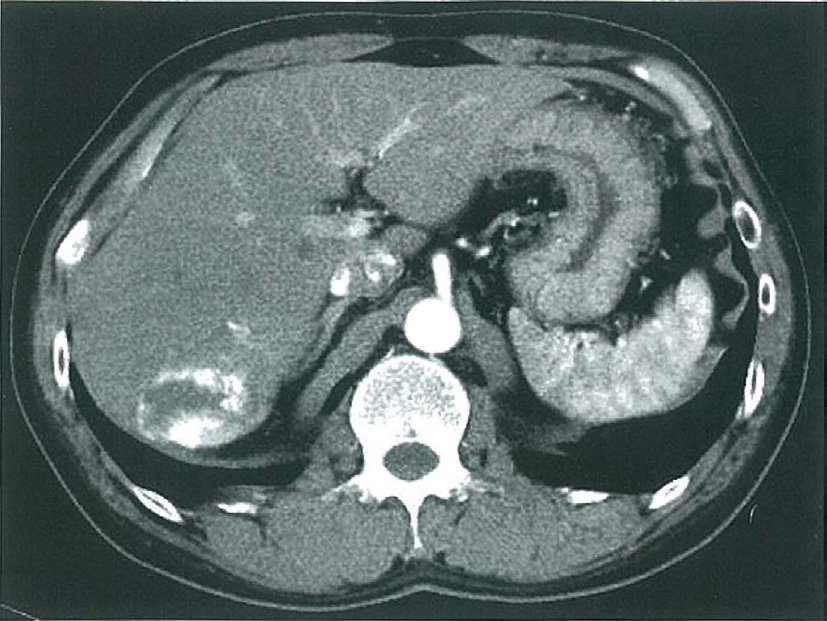
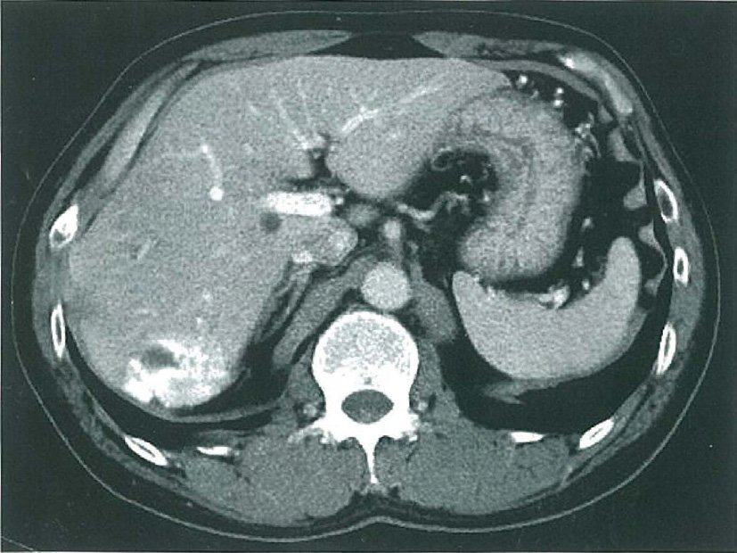
ａ 肝囊胞
ｂ 肝細胞癌
ｃ 肝血管腫
ｄ 肝内胆管癌
ｅ 転移性肝癌
A
B
✅
c 肝血管腫
若年女性・無症状・偶発的肝腫瘤→肝血管腫が最多
📝 メモ
📋 若年女性の偶発的肝腫瘤の鑑別
肝血管腫（最多・最有力）：・若年〜中年女性・無症状・良性
・MRI T2高信号（lamp sign）・動脈相周辺結節状濃染→fill-in
・治療：経過観察（悪性化なし）
他の鑑別：肝細胞腺腫（OC内服女性）・FNH（focal nodular hyperplasia）
🎯 国試ポイント
若年女性の偶発的肝腫瘤→肝血管腫（最多）を第一に考える。MRIで確認→経過観察。Q238・Q246と同テーマ。Q.257(105B-50)
76歳男性、B型慢性肝疾患で紹介（連問257-259）。現状の評価に必要な検査はどれか。
ａ CRP 高値
ｂ 尿素窒素高値
ｃ 血小板数減少
ｄ γ-グロブリン低値
ｅ 総コレステロール高値
✅
c HBV DNA定量（ウイルス量評価）
B型慢性肝疾患の活動性評価：HBV DNA定量が最重要（第2章Q70と同テーマ）
📝 メモ
📋 B型慢性肝疾患の評価（Q70の復習）
必要な評価：①HBV DNA定量：ウイルス増殖量→治療適応・効果判定
②HBe抗原/抗体：増殖状態の指標
③AST/ALT・Alb・PT：肝機能・予備能評価
④超音波：肝臓の形態・腹水・HCCスクリーニング
🎯 国試ポイント
Q70と同テーマ。B型慢性肝炎の治療判断：HBV DNA定量＋ALT値が鍵。Q.258(105B-51)
同症例（B型慢性肝疾患）。HCCのスクリーニングに有用な検査はどれか。
ａ 食道切除術
ｂ 抗真菌薬投与
ｃ 内視鏡的粘膜切除術
ｄ 内視鏡的静脈瘤結紮術
ｅ プロトンポンプ阻害薬投与
✅
d 腹部超音波＋AFP・PIVKA-II
HCCサーベイランス：超音波（6か月毎）＋AFP・PIVKA-II（Q154と同テーマ）
📝 メモ
📋 HCCサーベイランス（Q154・Q184の復習）
B型肝炎患者のHCCリスク：肝硬変でなくてもHCCが発生しうる（HBV DNAが直接癌化）サーベイランス方法：
①腹部超音波（6か月毎）：スクリーニング
②AFP・PIVKA-II（6か月毎）：腫瘍マーカー
③高リスク（肝硬変）：CT/MRI（12か月毎）追加
🎯 国試ポイント
HCCサーベイランス：超音波＋AFP・PIVKA-II（6か月毎）。HBV患者では肝硬変がなくてもHCCが発生しうる。Q.259(105B-52)📷 画像
同症例（HCC合併B型慢性肝硬変）、多発HCC。肝病変に対する治療として適切なのはどれか。（c or e）
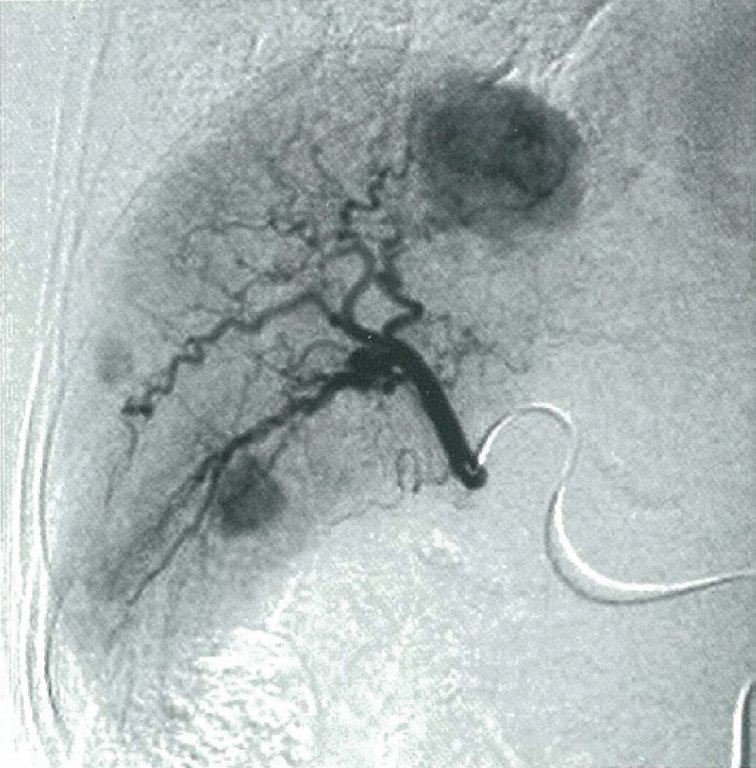
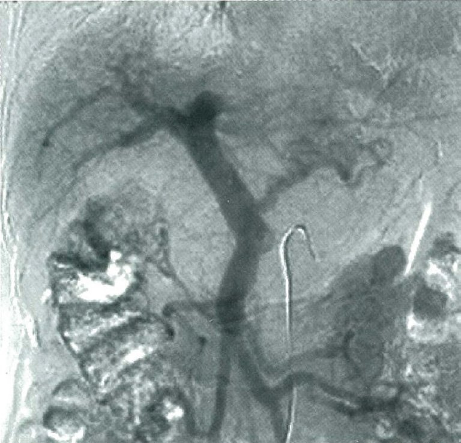
ａ 肝移植
ｂ 肝切除術
ｃ 肝動注化学療法
ｄ ラジオ波焼灼療法
ｅ 肝動脈化学塞栓療法
B
C 85
✅
c,e 肝動注化学療法または肝動脈化学塞栓療法（どちらも正解）
多発HCC・大型・Child B-C→TACE or 肝動注化学療法
📝 メモ
💊 多発性HCCの治療選択（Q218・Q229の拡張）
多発性HCC（TACE適応困難な例）への選択肢：TACE（肝動脈化学塞栓療法）：標準治療（門脈本幹開存が条件）
肝動注化学療法（HAIC）：カテーテルを肝動脈に留置→抗癌剤を持続注入
→TACE困難例や門脈浸潤例に有効
ソラフェニブ：分子標的薬→TACE不応例・肝外転移例
🎯 国試ポイント
Q259は「c or e」（どちらでも正解）の特殊問題。TACE（c）と肝動注化学療法（e）はいずれも多発HCCへの選択肢。Q.260(105D-21)📷 画像正答率 74%
68歳男性、B型肝炎20年放置。超音波で肝占拠性病変。AFP・PIVKA-II↑。診断に最も有用な検査はどれか。
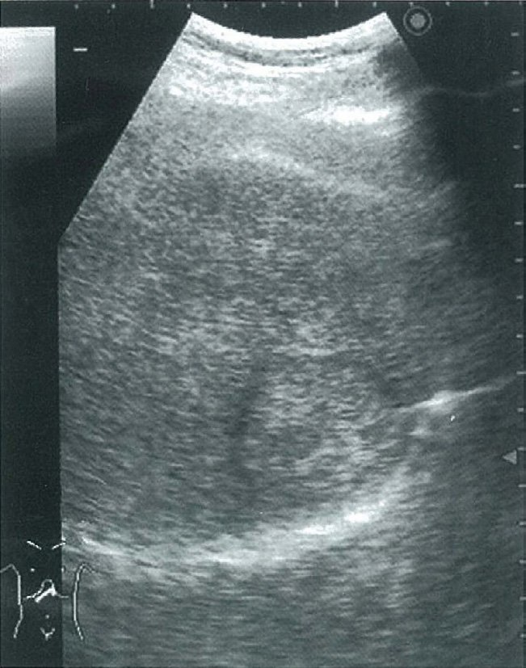
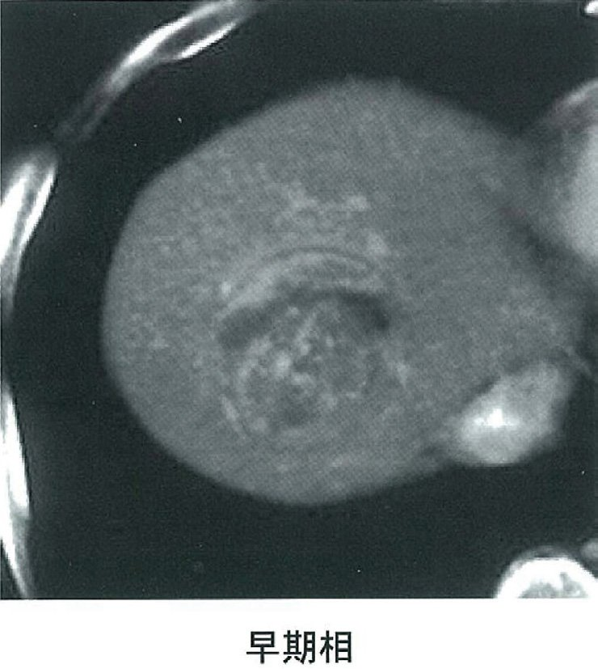
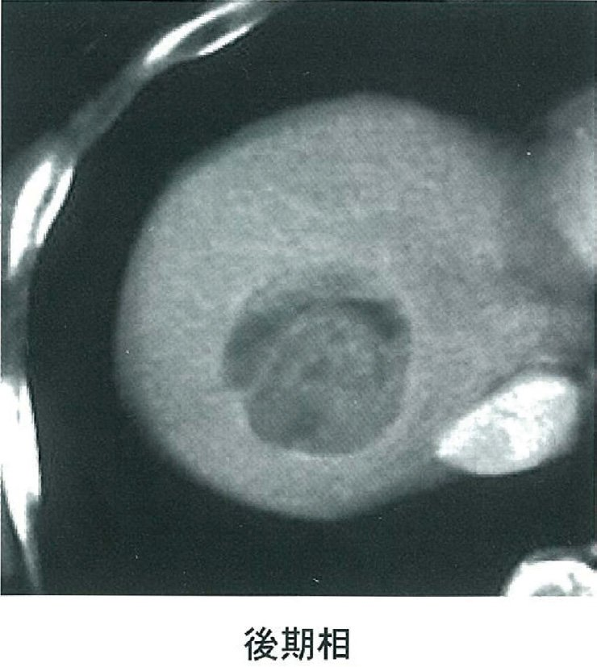
ａ 肝細胞癌
ｂ 肝内胆管癌
ｃ 肝囊胞
ｄ 胆囊癌
ｅ 転移性肝癌
A
B
C メック予備校用
✅
a 腹部造影CT（ダイナミックCT）
AFP↑＋肝腫瘤→HCCを疑い、ダイナミックCTで確定
📝 メモ
📋 HCCの確定診断（Q216・Q221の復習）
診断の流れ：①超音波でスクリーニング→腫瘤発見
②AFP・PIVKA-II→高値ならHCCの疑い強
③ダイナミックCT（確定診断）：動脈相hypervascular＋門脈相washout→HCC確定
④非典型例→EOB-MRI or 肝生検
🎯 国試ポイント
HCC確定診断：ダイナミックCT（動脈相hypervascular＋門脈相washout）。AFPは診断補助。Q.261(104A-30)📷 画像正答率 99%
50歳男性、B型慢性肝炎で通院中、超音波で肝に単発占拠性病変（2cm）。HCC確定のために最も有用な検査はどれか。
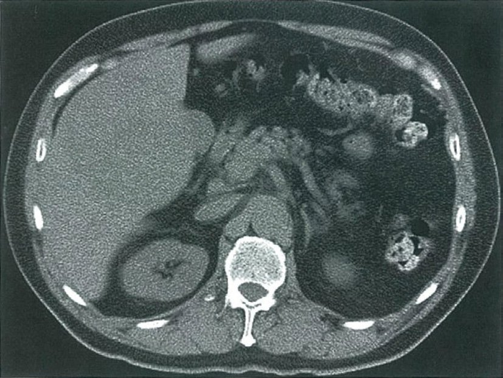
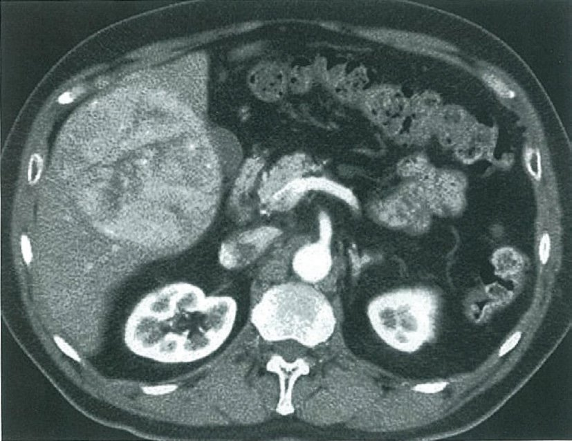
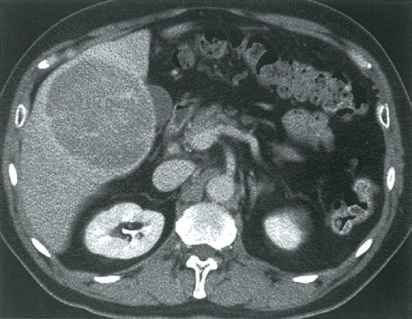
ａ α1-アンチトリプシン法
ｂ グルカゴン負荷試験
ｃ 線維化マーカー
ｄ BT-PABA 試験
ｅ ICG 試験
A
B
C
✅
e 腹部造影CT（ダイナミックCT）またはEOB-MRI
HCC確定：ダイナミックCT/EOB-MRIが第一選択（生検は非典型例のみ）
📝 メモ
📋 HCC診断の検査選択
直径2cmの肝腫瘤の診断：①造影CT（ダイナミック）またはEOB-MRI：動脈相hypervascular＋washoutで確定
②両検査で非典型→肝生検（出血・播種リスクあり）
③AFP・PIVKA-II：参考値（確定には不十分）
🎯 国試ポイント
2cm以上のHCC：典型的CT所見（hypervascular + washout）があれば生検不要で確定診断可能。Q.262(104E-32)正答率 95%
疾患と治療の組合せで誤っているのはどれか。
ａ 胃静脈瘤 ―――――――――― バルーン閉塞下経静脈的静脈瘤閉塞〈BRTO〉
ｂ 肝膿瘍 ―――――――――――― 動脈塞栓術
ｃ 肝細胞癌 ―――――――――― ラジオ波焼灼術
ｄ 総胆管結石症 ―――――――― 内視鏡的除石術
ｅ 硬化性胆管炎 ―――――――― 内視鏡的ドレナージ
✅
b （誤り：例えば「肝血管腫 – TACE」など、不適切な治療の組合せ）
肝血管腫には通常TACEは不要（経過観察が基本）
📝 メモ
📋 疾患と治療の正しい/誤りの組合せ
| 疾患 | 正しい治療 |
|---|---|
| HCC（多発） | TACE |
| 肝血管腫（無症状） | 経過観察（TACEは不要・誤り） |
| 細菌性肝膿瘍 | PTAD＋抗菌薬 |
| アメーバ性肝膿瘍 | メトロニダゾール |
| 大腸癌肝転移 | 肝切除（根治目的） |
🎯 国試ポイント
肝血管腫：無症状なら経過観察のみ（手術・TACEは不要）。TACEや切除は過剰治療。Q.263(102D-15)正答率 39%
肝移植の適応とならないのはどれか。
ａ 肝硬変
ｂ 劇症肝炎
ｃ 肝細胞癌
ｄ 胆道閉鎖症
ｅ 肝内胆管癌
✅
e （適応外：転移性肝癌）
Q157・Q193・Q224と同テーマ（4回目）：転移性肝癌は肝移植適応外
📝 メモ
📋 肝移植適応（Q157・Q193・Q224の最終確認）
肝移植の禁忌（繰り返し出題テーマ）：①転移性肝癌（原則）
②アルコール継続（禁酒できない）
③活動性感染症（コントロール不良）
④Milan基準外HCC（単発>5cm or 4個以上）→相対禁忌
🎯 国試ポイント
肝移植禁忌は4回出題。転移性肝癌・アルコール継続・活動性感染を確実に覚える。Q.264(102D-35)正答率 97%
58歳男性、上行結腸癌術後3年、超音波で肝孤立性腫瘤（2cm）。次に行うべき検査はどれか。
ａ 経過観察
ｂ 経皮的エタノール注入療法
ｃ 放射線治療
ｄ 免疫療法
ｅ 肝部分切除 39 メック予備校用
✅
e 腹部造影CT（大腸癌肝転移の確認）
大腸癌術後の肝腫瘤→転移性肝癌を第一に疑い、造影CTで確認
📝 メモ
📋 大腸癌術後の肝転移診断
大腸癌術後（特に3年以内）の肝腫瘤→転移性肝癌（大腸癌肝転移）を第一に疑う診断：造影CT（ring enhancement・low attenuation）
転移性肝癌のCT：
・動脈相：ring enhancement（周辺のみ濃染）
・門脈相：bull's-eye pattern（周辺+内部低吸収）
治療：切除可能→肝切除（5年生存率30〜50%）
🎯 国試ポイント
大腸癌術後の肝腫瘤→まず転移を考える。造影CTで確認後、切除可能なら積極的に切除（予後改善）。Q.265(102G-34)正答率 97%
腹腔内膿瘍への対応で適切なのはどれか。
ａ 動脈塞栓術
ｂ ドレナージ
ｃ エタノール注入
ｄ ラジオ波焼灼
ｅ 硬化療法
✅
b 経皮的ドレナージ（PTAD）＋抗菌薬
腹腔内膿瘍（肝膿瘍含む）の標準治療：経皮的ドレナージ＋抗菌薬
📝 メモ
💊 腹腔内膿瘍の管理
腹腔内膿瘍（術後・虫垂炎後・肝膿瘍等）の治療原則：①経皮的ドレナージ（PTAD・USDガイド下）：膿瘍腔の減圧・培養
②広域抗菌薬：グラム陰性＋嫌気性菌カバー
③ドレナージ困難→外科的ドレナージ（開腹・腹腔鏡）
④原因（胆石・虫垂炎等）の同時/待機的治療
🎯 国試ポイント
腹腔内膿瘍：経皮的ドレナージ＋抗菌薬が標準治療。Q255（細菌性肝膿瘍）と同原則。Q.266(101F-31)2択2択正答率 95%
大腸疾患と合併症の組合せで正しいのはどれか。2つ選べ。
ａ 腸結核 ――――――――――――――――――― 溶血性尿毒症症候群〈HUS〉
ｂ アメーバ赤痢 ――――――――――――――― 肝膿瘍
ｃ 潰瘍性大腸炎 ――――――――――――――― 原発性硬化性胆管炎
ｄ 過敏性腸症候群 ――――――――――――― ぶどう膜炎
ｅ 大腸カルチノイド ―――――――――――― 結節性紅斑
✅
b,c （潰瘍性大腸炎→PSC / Crohn病→腸管外合併症）
潰瘍性大腸炎とPSC（原発性硬化性胆管炎）の合併が最重要
📝 メモ
📋 炎症性腸疾患と腸管外合併症
| 疾患 | 腸管外合併症（肝・胆） |
|---|---|
| 潰瘍性大腸炎（UC） | PSC（原発性硬化性胆管炎）：合併率5〜10% |
| Crohn病 | PSC（UCよりは少ない）・胆石（胆汁酸吸収障害） |
| PSC合併UC | 胆管癌リスクが高い（UCは難治性、全大腸炎型に多い） |
🎯 国試ポイント
潰瘍性大腸炎にPSCが合併しやすい（5〜10%）。PSC→胆管癌リスク↑。この組合せは必須知識。Q.267(101F-35)正答率 97%
肝細胞癌に対する動脈塞栓術（TACE）が適応とならないのはどれか。
ａ 破裂した腫瘍
ｂ 径8cm 大の腫瘍
ｃ 両葉に存在する腫瘍
ｄ 肝表面に突出する腫瘍
ｅ 門脈本幹が腫瘍塞栓で閉塞した腫瘍 95
✅
e 門脈本幹閉塞例
Q218・Q226・Q229・Q231と同テーマ（5回目）：門脈本幹閉塞はTACEの禁忌
📝 メモ
⚠️ TACE禁忌（最終確認）
TACE禁忌（5回繰り返し出題）：①門脈本幹閉塞（最重要禁忌）→肝動脈塞栓→肝壊死
②重度肝機能障害（Child C）
③肝外転移あり
④活動性感染症・腎不全（造影剤）
🎯 国試ポイント
TACEの絶対禁忌：門脈本幹閉塞。Q218・Q226・Q229・Q231・Q267で5回出題。この問題は完全確実にする。Q.268(101H-44)📷 画像正答率 52%
64歳男性、持続する腹痛・顔色不良。脈拍触れず（腹腔内出血疑い）。肝疾患の既往。最も考えられる診断はどれか。
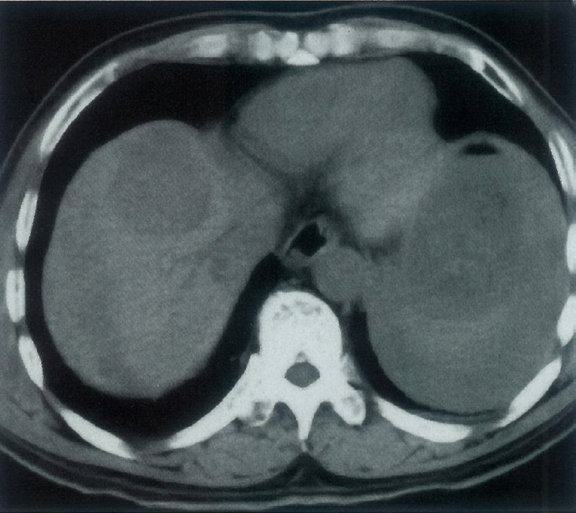
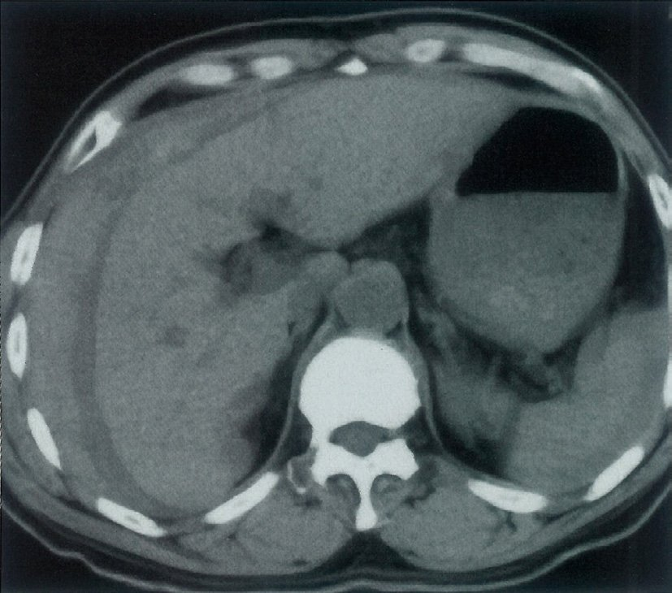
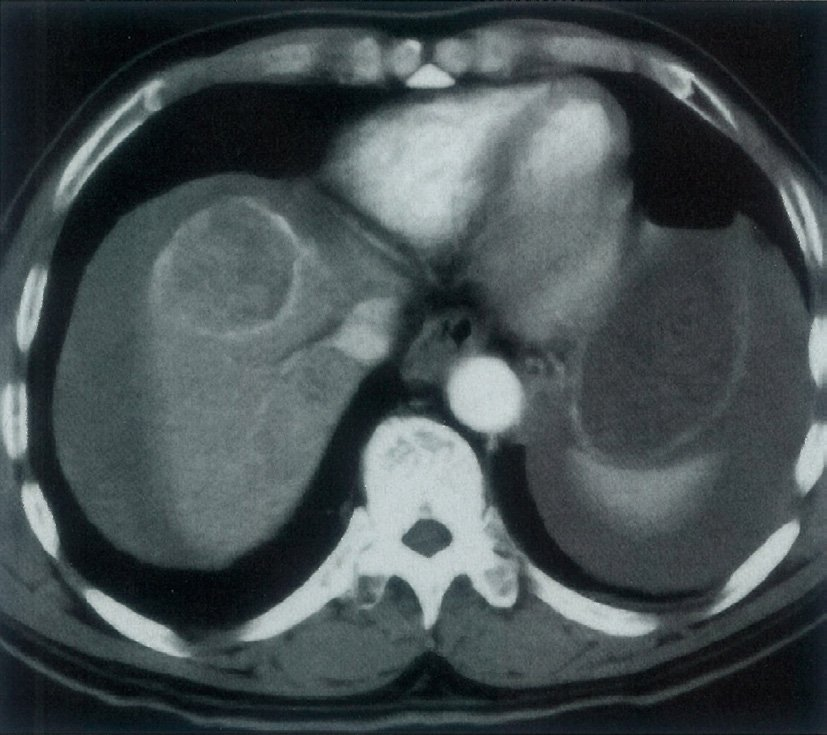
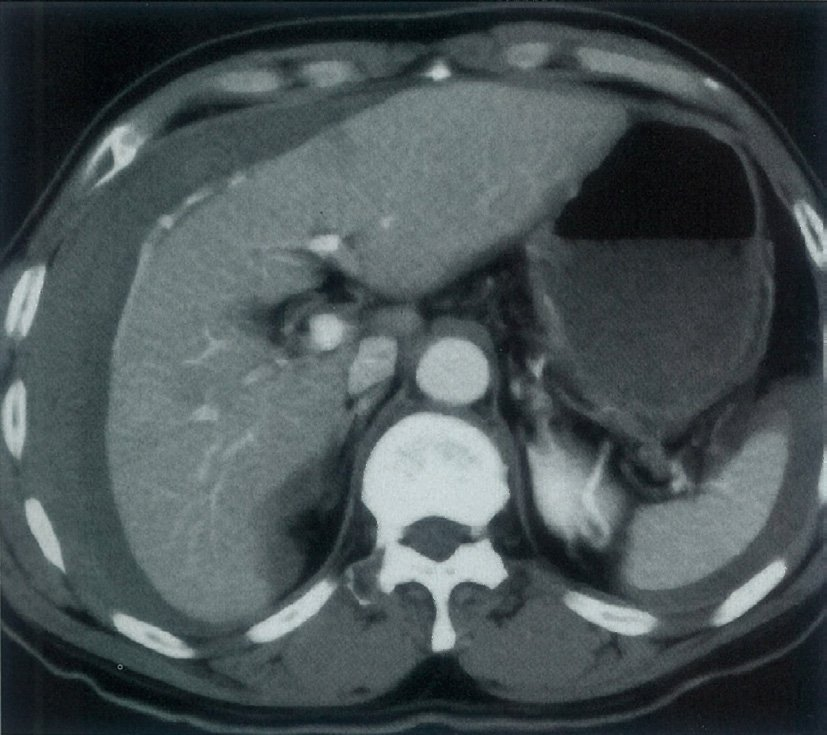
ａ 動脈塞栓術
ｂ バルーン閉塞下経静脈的静脈瘤閉塞〈BRTO〉
ｃ ステントグラフト術
ｄ 抗腫瘍薬動注療法
ｅ 経皮的ラジオ波焼灼
A
B
C
D メック予備校用
✅
a HCC（肝細胞癌）破裂・腹腔内出血
肝疾患背景＋急激な腹痛＋循環不全→HCC破裂（腹腔内出血）を疑う
📝 メモ
🚨 HCC破裂
HCC破裂：・HCCの5〜10%で破裂が起こる（表面に突出した腫瘍）
・症状：突然の腹痛・腹腔内出血→出血性ショック（脈拍微弱・血圧低下）
・診断：腹部CT（被膜外血腫・腹腔内出血）・超音波（腹腔内血性液体）
・治療：TACE（経肝動脈塞栓術による緊急止血）が第一選択
・外科的処置：バイタル不安定→緊急止血術